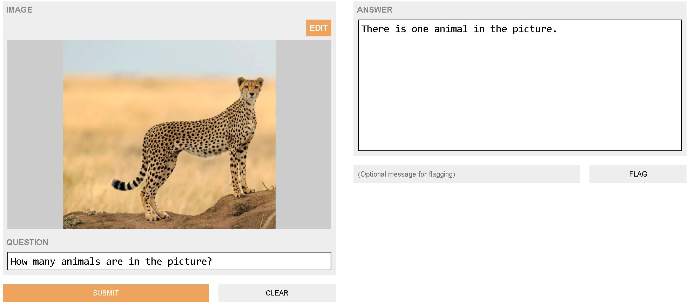
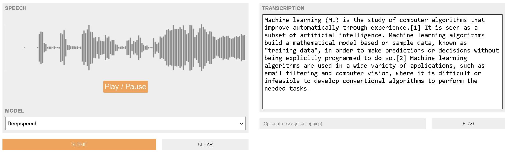
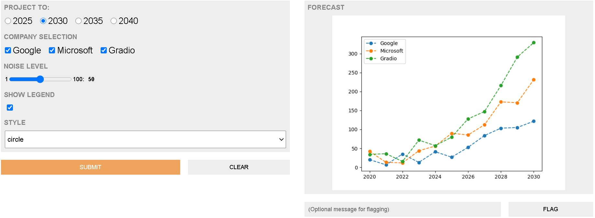
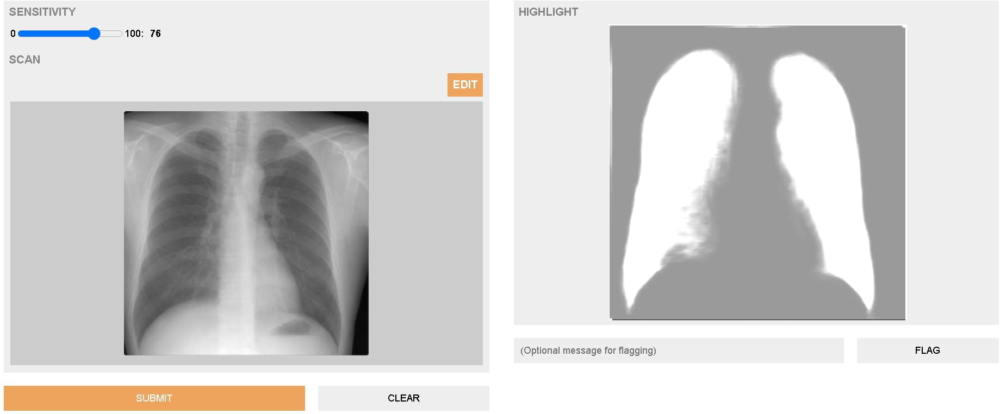
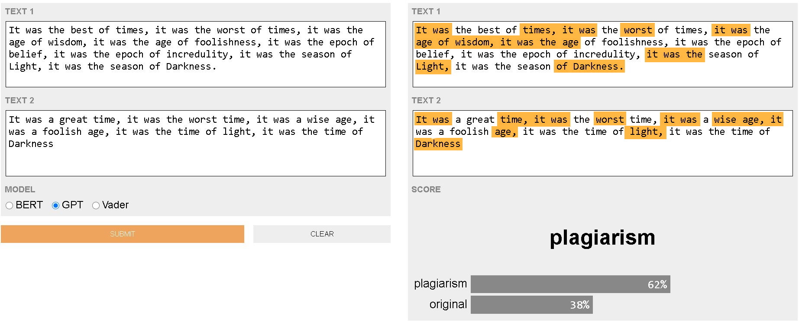

Interfaces for your ML Models
Generate an easy-to-use UI for your ML model, function, or API with only a few
lines of code. Integrate directly into your Python notebook.
Follow @gradio-app
Star
Gradio wraps your Python function with customizable UI components to quickly create interfaces. Mix and match components to support any combination of inputs and outputs.
Below are a few demos. Check the Gallery for full code examples.
import gradio as gr
def recognize_digit( img ) :
# ... implement digit recognition logic on input numpy array
# ... return confidence dictionary for labels
gr.Interface( fn =recognize_digit ,
inputs ="sketchpad", outputs ="label") .launch()
The code above produces produces the interface below. Draw a digit on the sketchpad below and click submit to get a prediction!
import gradio as gr
def answer_question( context , question ) :
# ... implement Q&A model
# ... return answer to question
gr.Interface( fn =answer_question ,
inputs =["textbox", "text"], outputs ="text") .launch()
Provide a context paragraph and ask a question that can be answered with the context information. Click submit to get the answer!
import gradio as gr
def face_segmentation( img ) :
# ... implement face segmentation model on input 200x200 numpy array
# ... return segmentation mask as numpy array
webcam = gr.in.Webcam(shape =(200, 200))
gr.Interface( fn =face_segmentation ,
inputs =webcam, outputs ="image") .launch()
Take a snapshot from your webcam and click submit to generate a face segmentation.
import gradio as gr , matplotlib.pyplot as plt
def outbreak_forecast( r , month , countries , social_distancing ) :
# ... run model to forecast outbreak and generate plots
# ... return plt
r = gr.in.Slider(1, 5)
month = gr.in.Dropdown(["May", "June", "July"])
countries = gr.in.CheckboxGroup(["USA", "Canada", "Mexico", "UK"])
gr.Interface( fn =outbreak_forecast ,
inputs =[r, month, countries, "checkbox"], outputs ="plot") .launch()
Provide the parameters below and click submit to view the forecast of a simulated disease outbreak.